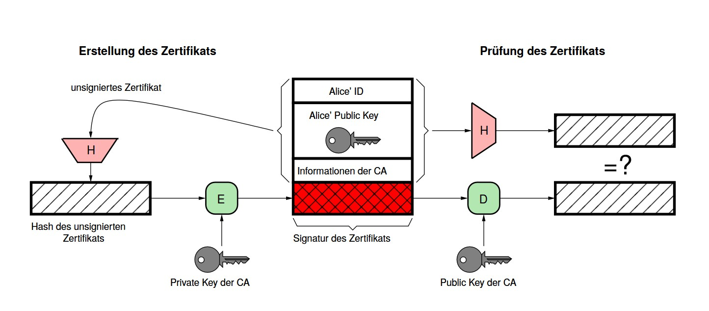
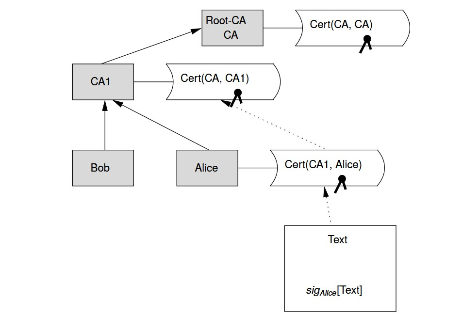
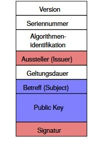
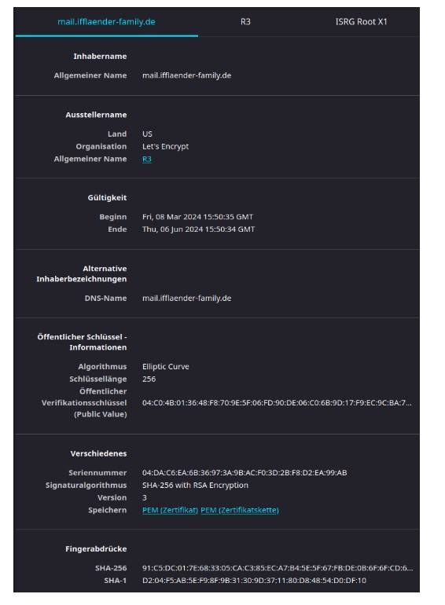
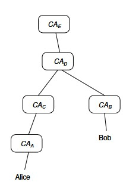
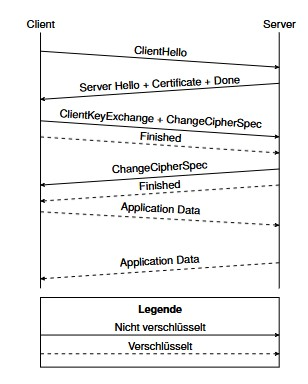
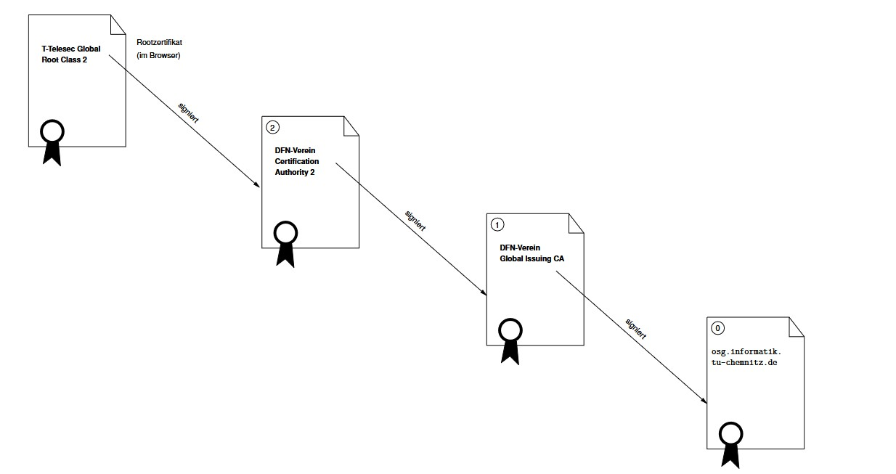
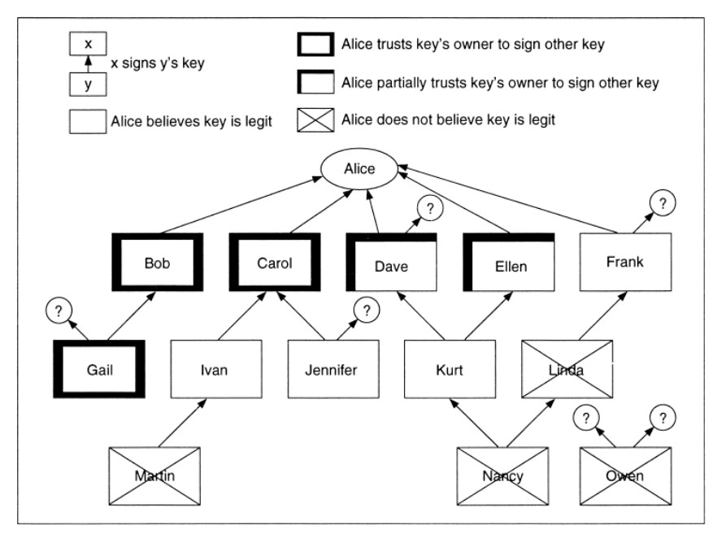
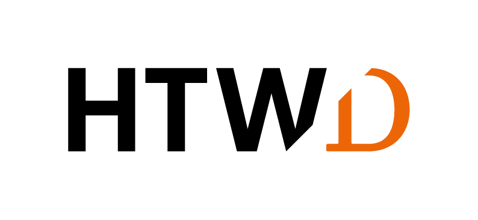

Schlüsselverwaltung

Prof. Dr. Lukas Iffländer
HTW Dresden
01.08.2026
Agenda
- 01Zertifikate
- 02Public Key Infrastructure
- 03Certification Authorities
- 04TLS-Zertifikate
- 05PGP und GPG
- 06Schlüsselsicherheit
Lernziele
Nach dieser Einheit können Sie …
- X.509-Zertifikate lesen (Issuer/Subject, SAN, Laufzeit)
- Zertifikatsketten bis zur Root CA prüfen
- Widerrufsmechanismen (CRL, OCSP, Stapling) einordnen
- den TLS-Handshake skizzieren (TLS 1.2/1.3, (EC)DHE)
- PGP/GPG-Grundlagen anwenden (Signieren, Verifizieren, Export)
Management öffentlicher Schlüssel
Problem: Übereinstimmung öffentlicher Schlüssel – Identität
Lösung: Zertifikat = Nachricht, die
- Repräsentation der Identität,
- zugehörigen öffentlichen Schlüssel,
- Zeitstempel oder Geltungsdauer enthält und durch eine vertrauenswürdige Instanz (Trent, „Issuer“, Certification Authority) signiert wurde.
Tip
Def.: Ein Zertifikat ist eine Einheit, die einen kryptografischen Schlüssel an eine Identität bindet.
Zertifikate für öffentliche Schlüssel

Management öffentlicher Schlüssel
Aufbau eines Zertifikats; formal
Ein durch Zertifizierungsinstanz CA ausgestelltes Zertifikat für Nutzer A enthält:
\[ Cert(CA,A) = \{ID_{CA}, ID_A, e_A, T, Ext, sig_{CA}\} \]
mit
\[ sig_{CA} = d_{CA}\{H(ID_{CA}, ID_A, e_A, T, Ext)\} \]
Legende:
- \(ID_A\): eindeutiger Name des Teilnehmers A
- \(e_A\): öffentlicher Schlüssel des Teilnehmers A
- \(d_{CA}\): privater Schlüssel der CA
- \(T\): Gültigkeitszeitraum des Zertifikats
Verifikation einer digitalen Signatur
Schritt 1: Verifikation der Signatur
Bob möchte Alice’ Signatur eines Dokuments prüfen. Dazu muss er:
- Alice’ Zertifikat besorgen (enthält den zur Unterschrift passenden öffentlichen Schlüssel \(e_A\)),
- mit \(e_A\) den ursprünglichen Hashwert des Dokuments \(H_1\) entschlüsseln,
- den aktuellen Hashwert des Dokuments \(H_2\) ermitteln,
- Die Signatur passt zum Dokument, wenn \(H_1 = H_2\).
Verifikation einer digitalen Signatur
Schritt 2: Verifikation des Zertifikates
Nun muss Bob prüfen, ob das Zertifikat stimmt:
- den öffentlichen Schlüssel \(e_{CA}\) der CA besorgen, die Alice’ Zertifikat ausgestellt hat,
- mit \(e_{CA}\) den ursprünglichen Hashwert des Zertifikats \(H_3\) entschlüsseln,
- den aktuellen Hashwert des Zertifikats \(H_4\) ermitteln,
- das Zertifikat ist gültig, wenn \(H_3 = H_4\).
Bob verifiziert Alice’ Signatur
Prinzipielle Struktur einer Public Key Infrastructure (PKI)

Aufbau eines Zertifikats
X.509 (ISO Authentication Framework)

- Version: des Protokolls (1, 2 oder 3)
- Seriennummer: eindeutig innerhalb der CA
- Algorithmus: der Signatur (zum Nachvollzug)
- Aussteller: eindeutiger Name der CA
- Subject (Inhaber): Identität, der der öffentliche Schlüssel zugeordnet ist
- Subject Alternative Name (SAN): Hostname/URI/E-Mail für Prüfungen
- Key Usage/EKU: erlaubte Verwendungen (z. B. TLS-Server)
- Signatur: ausgestellt durch CA
Zertifikatseigenschaften

Namen im X.509-Zertifikat
Benennung von Issuer und Subject in X.509 erfolgt mittels hierarchischem Distinguished Naming des X.500-Protokolls mit den folgenden Feldern:
| Kürzel | Bedeutung | Beispiel |
|---|---|---|
| CN | Common Name | rtypo3p.rz.htw-dresden.de |
| E | E-Mail-Adresse | certificate@trustcenter.de |
| O | Organization Name | TC TrustCenter for Security |
| OU | Organizational Unit (Organisationseinheit) | TC TrustCenter Class 2 CA in Data Networks GmbH |
| L | Locality Name | Hamburg |
| ST | State Name | Hamburg |
| C | Country | DE |
Certification Authorities
Def.: Eine Einheit, die Zertifikate ausstellt, wird Certification Authority (CA) genannt.

- Untergeordnete CAs besitzen Zertifikate, die von der jeweils übergeordneten CA signiert sind.
- Zuoberst: Root CA (hier: CAE) als Vertrauensanker.
- Es entsteht eine Zertifizierungshierarchie.
- CAs können sich gegenseitig zertifizieren (Cross Certification).
Certification Authorities
Einige Unternehmen bieten Zertifizierung als Dienstleister an, z. B. (historisch und aktuell):
- VeriSign (heute Teil von DigiCert), Thawte
- DigiCert, Sectigo (ehemals Comodo), GlobalSign, Entrust
Darüber hinaus gibt es gemeinnützige oder akademische Organisationen:
- Internet Security Research Group (Let’s Encrypt)
- DFN e. V. (DFN-PKI für Hochschulen)
Zertifikate der Root-CAs sind in typischer Software (Browser) eingebaut.
Problem des zentralisierten Modells
Problem
Kann man der CA unbedingt vertrauen?
Antwort: Leider nein:
- Einbruch in (niederländische) Firma DigiNotar 2011, Angreifer stellten sich unberechtigte Zertifikate aus, diese wurden missbräuchlich zur Überwachung iranischer Bürger genutzt1
- (türkische) CA Türktrust stellte im August 2011 irrtümlich 2 Zertifikate aus, mit denen sich beliebige Domains zertifizieren lassen
Widerruf von Zertifikaten (Certificate Revocation)
Problem: Schlüssel können vor ihrem “Verfallsdatum” ungültig werden, z. B. bei Kompromittierung eines privaten Schlüssels -> zugehöriges Zertifikat muss zurückgezogen werden
a) Certificate Revocation List (CRL)
- signierte Sperrliste der CA mit allen widerrufenen Zertifikaten
- beim Prüfen eines Zertifikates muss CRL durchsucht werden
- Voraussetzung: Teilnehmer sind permanent online
b) Kurzlebige Zertifikate (Short-Lived Certificates)
- kurze Gültigkeitsdauer des Zertifikats (z. B. 24-72 h)
- nutzt Mechanismus der begrenzten Lebensdauer
- Voraussetzung: Teilnehmer sind permanent online
Exkurs: TLS
Transport Layer Security
- “S” in HTTPS
- primäre Motivation historisch: E-Payment im Netz
- © Netscape (SSL 2.0/3.0); heute: TLS 1.2/1.3
- komplexer Standard
Sicherer Kanal zwischen Client und Server
- Vertraulichkeit: Verschlüsselte Kommunikation
- Authentisierung: Zertifikate und vertrauenswürdige CAs
Verbindungsaufbau: TLS-Handshake

- ClientHello: Cipher Suites (Schlüsselaustausch, Verschlüsselung, MAC), TLS-Version
- ServerHello: gewählte Verfahren, Zertifikat des Servers, optional »Client Certificate Request«
- Schlüsselaustausch: (EC)DHE, gemeinsame Sitzungsschlüssel werden abgeleitet (in TLS 1.3 kein RSA-Keytransport)
Prüfung des TLS-Zertifikats
Beispiel einer Zertifikatskette
$ openssl s_client -connect htw-dresden.de:443 -servername htw-dresden.de -showcerts \
2>/dev/null </dev/null
Certificate chain
0 s:C=DE, ST=Sachsen, O=Hochschule für Technik und Wirtschaft Dresden,
CN=rtypo3p.rz.htw-dresden.de
i:C=NL, O=GEANT Vereniging, CN=GEANT OV RSA CA 4
a:PKEY: rsaEncryption, 4096 (bit); sigalg: RSA-SHA384
v:NotBefore: Aug 2 00:00:00 2023 GMT; NotAfter: Aug 1 23:59:59 2024 GMT
1 s:C=GB, ST=Greater Manchester, L=Salford, O=Comodo CA Limited, CN=AAA Certificate [...]
i:C=GB, ST=Greater Manchester, L=Salford, O=Comodo CA Limited, CN=AAA Certificate [...]
a:PKEY: rsaEncryption, 2048 (bit); sigalg: RSA-SHA1
v:NotBefore: Jan 1 00:00:00 2004 GMT; NotAfter: Dec 31 23:59:59 2028 GMT
2 s:C=US, ST=New Jersey, L=Jersey City, O=The USERTRUST Network, CN=USERTrust RSA [...]
i:C=GB, ST=Greater Manchester, L=Salford, O=Comodo CA Limited, CN=AAA Certificate [...]
a:PKEY: rsaEncryption, 4096 (bit); sigalg: RSA-SHA384
v:NotBefore: Mar 12 00:00:00 2019 GMT; NotAfter: Dec 31 23:59:59 2028 GMT
3 s:C=NL, O=GEANT Vereniging, CN=GEANT OV RSA CA 4
i:C=US, ST=New Jersey, L=Jersey City, O=The USERTRUST Network, CN=USERTrust RSA [...]
a:PKEY: rsaEncryption, 4096 (bit); sigalg: RSA-SHA384
v:NotBefore: Feb 18 00:00:00 2020 GMT; NotAfter: May 1 23:59:59 2033 GMTPrüfung des TLS-Zertifikats

Schlüsselzertifizierung bei PGP
“Web of Trust”
- keine Zertifizierungsinstanzen
- Benutzer unterzeichnen öffentliche Schlüssel gegenseitig
- behalten Kopien der unterzeichneten Schlüssel
- Keysigning Party
- erlaubt individuelle Beurteilung:
- Vertrauen in die Gültigkeit eines Schlüssels
- Zuverlässigkeit der Unterschrift eines Teilnehmers
- Zuverlässigkeit eines Teilnehmers, andere Schlüssel zu zertifizieren
- auch nicht vertrauenswürdige Schlüssel können benutzt werden
Beispiel für Vertrauensmodell im PGP [1]

Schlüsselaufbewahrung
- öffentliche Schlüssel sind einfach aufzubewahren
- ihre Integrität muss gesichert sein
- Nutzung der Zertifikate
- geheime Schlüssel und Schlüssel für symmetrische Kryptografie?
- persistent in Datei; Nutzung von OS-Mechanismen zum Zugriffsschutz
- verschlüsselte Abspeicherung (hilft nicht gegen Keylogging)
- ROM oder Smartcard; Hardware-Token (HSM/TPM, FIDO2/YubiKey)
- Problem: Diebstahl der Smartcard
- Verbesserung: Verteilung auf mehrere Karten oder Karte und Lesegerät
Pretty Good Privacy (PGP)
- ist eine Software zum Verschlüsseln und Signieren von E-Mails
- 1991 durch Phil Zimmermann entwickelt
- erste Implementierung von Public-Key-Kryptografie für die Allgemeinheit
- unterlag restriktiven Exportbestimmungen (als Buch exportiert)
- nutzt hybride Kryptografie
PGP
- nutzte (ursprünglich) IDEA zur symmetrischen Verschlüsselung, MD5 als Hash und RSA zur Public-Key-Kryptografie (historisch)
- Web of Trust anstatt CAs
- wechselvolle Entwicklungsgeschichte
- zeitweise Eigentum von Network Associates (aka McAfee)
- in dieser Zeit Weiterentwicklung als Closed Source (Vertrauen verschwunden)
- wieder zurück an die PGP Corporation
- als kommerzielle Software entwickelt und vertrieben
- -> OpenPGP-Standard als offene Alternative (heute üblich: AES, SHA-256/512)
Gnu PrivacyGuard (GPG)
- freie und patentfreie Implementierung des OpenPGP-Standards (RFC 4880)
- unterstützt u. a. DSA, ElGamal; heute gängig: AES und SHA-2 (z. B. SHA-256)
- alle gängigen Desktop-Betriebssysteme (Unix-Systeme, Windows, macOS) unterstützt
- in Standardsoftware (MUA, Browser, Chatsoftware) bereits integriert, aber auch als Kommandozeilenprogramm nutzbar
- unterstützt Schlüsselverteilung, z. B. über Web Key Directory (WKD) und https://keys.openpgp.org
Nutzung von GPG
… an der Kommandozeile
gpg --full-generate-keyerzeugt den Schlüsselring (Key Ring) sowie das Schlüsselpaargpg --export --armorextrahiert den Public Key und schreibt diesen als 7-Bit-Zeichen nach stdout oder in eine Dateigpg --import [datei]importiert einen Schlüssel in den Keyringgpg --sign <datei>signiert die Dateigpg --verify <sig> [<datei>]überprüft die Signatur, sofern der öffentliche Schlüssel vorliegtgpg -c <datei>verschlüsselt symmetrischgpg -e / -dver- bzw. entschlüsselt asymmetrisch
Schlüsselsicherheit
Der Word-Makro-Virus “Caligula” (W97M/Caligula.a)
Searches for PGP Secure Keyring using registry entry to get PGP installed path. […] If user name is not ‘Caligula’, runs PGP Secure Keyring find and send routine - user name retrieved from registry […] If file found, file is uploaded to the virus author’s ftp site using a script file written as
extttc:\cdbrk.vxdand usingftp.exein a hidden process (McAfee Virusdatenbank)
- Keyring lässt sich viel leichter knacken als eine verschlüsselte Nachricht, insbesondere bei kurzer/schlechter Passphrase (Wörterbuch-Angriff)
- Die beste Verschlüsselung nützt nichts, wenn andere Aspekte der Systemsicherheit vernachlässigt werden (z. B. Keylogger; Gegenmaßnahmen: PIN-Pad/Hardware-Token)!
Exkurs: Schlangenöl
Woran erkennt man schlechte kryptografische Software?
Warning Sign No.1: Pseudo-mathematical gobbledygook.
- “Encryptor 4.0 uses a unique in-house developed incremental base shift algorithm”
- “From a mathematical point of view, the TTM algorithm is intuitively natural and less cumbersome to use than methods that are number-theory based.” (http://www.usdsi.com/)
- “SuperKrypt products utilize the DNGT bulk encryption method”
- “Since key length and key structure vary and since the encryption engine does not use any mathematical algorithms, reverse engineering is impossible and guessing is not an option.”
Literaturverzeichnis I
[1] Bruce Schneier. Angewandte Kryptographie. Protokolle, Algorithmen und Sourcecode in C. [Nachdr.] Informationssicherheit. Bonn [u.a.]: Addison-Wesley, 2002. 844 S. ISBN: 3893198547.
Vielen Dank!
Prof. Dr. Lukas Iffländer
HTW Dresden
01.08.2026

01.08.2026 / Schlüsselverwaltung und Zertifikate / HTW Dresden / Prof. Dr. Lukas Iffländer